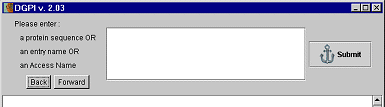

DGPI v2.04
Manuel d'utilisation
DGPI v2.04 propose deux modes de fonctionnements :
-
avec interface graphique;
-
avec interface texte sur la ligne de commande.
Mode graphique
Le mode graphique permet d'entrer une séquence de protéine
sous trois différentes formes :
-
access number;
-
entry name;
-
séquence d'acides aminés.
La protéine est entrée dans la boîte de texte présentée
ci-dessous. Pour traiter la protéine, il suffit ensuite de cliquer
sur le bouton Submit.

Le résultat de l'analyse par DGPI est présentée
sous forme graphique dans la partie inférieure de la fenêtre
de soumission.
Il est possible de soumettre plusieurs protéines à la
suite, puis de naviguer entre les différents résultats en
utilisant les boutons "Back" et "Forward".
Mode texte
Le mode texte permet de traiter des protéines en mode batch, ce
qui permet d'intégrer DGPI dans une chaîne de traitement automatique
de protéines. Le mode texte a également l'avantage de permettre
l'utilisation de protéines au format FASTA.
La syntaxe pour le mode texte est la suivante :
dgpi [-file=<file_name> [-output=HTML|text]] [-h] [-q]
La signification des options est la suivante :
-q : quiet mode (seuls les
messages d'erreur sont affichés)
-h :
affiche l'aide
-output: format de sortie HTML ou texte (HTML par défaut)
-file : traite la protéine contenue
dans le fichier spécifié. Le
résultat est stocké dans <file_name>.html ou
.txt
si la sortie texte est choisie
Le fichier spécifié par l'option -file peut
contenir une protéine dans différents formats :
-
access number;
-
entry name;
-
séquence d'acides aminés;
-
protéine au format FASTA.
Le format FASTA utilisé dans DGPI ne possède pas toutes les
fonctionnalités du format FASTA courant. Les fonctionalités
suivantes ne sont pas supportées par DGPI :
-
plusieurs protéines dans un fichier;
-
acides aminés non conventionnels (supportés : les 20 de base,
X, B, U et Z);
-
l'access number de la protéine doit être dans la première
ligne des caractères 4 à 10.
Un exemple de chaque format accepté par DGPI pour le mode texte
est fourni. Ces fichiers s'appellent example_*_format.txt (* remplace
une chaîne de caractères quelconque).
DGPI v2.04 Manuel d'utilisation
http://dgpi.pathbot.com/
email : dgpi@bigfoot.com |
18 août 2000
|
|